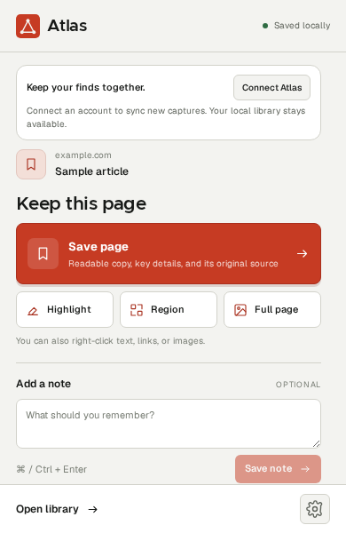

A good collection starts with noticing.
Leave a little room for the unexpected.
Field notes · sample sourceScreenshots, highlights and stray ideas.
One library for the things that catch your eye.
Keep the visual
details you want
to return to.

Save a readable copy of a page, one perfect detail, or a sentence you want to remember. Atlas keeps the original source with it.
Some ideas arrive before you have a place for them. A good collection starts with noticing. Save the detail now. Come back to the possibility later.
Save the highlighted sentence to see it land here.
Leave a little room for the unexpected.
Field notes · sample sourceTry it here. This demo does not save to your Atlas library.
Your collection, with context intact. Search by keyword, filter by type, and return to the source. Connect an account to open your synced finds from any browser.
Make room for your next ideaOriginal and canonical links, page details, author, dates and a content fingerprint stay with each saved page.
Keep a local library without an account, or connect Atlas to sync new captures to your private cloud library.
Use account capture settings to choose features, popup order, sync, OCR, summaries and tags across connected browsers.
Cloud captures can gain extracted image text, short summaries and tags in the background. Your originals are saved first, and every automatic step can be controlled from your dashboard.
Create your libraryText from your screenshots
The useful part, at a glance
A few more ways to find it
Cloud processing runs on Atlas’s server. A separately configured local companion may use its own model provider. See how data moves.
Create an account, install Atlas, then connect your browser. Your next good find lands in your private library.
Create accountYou can also use Atlas locally without an account.
Download Atlas Manual install · Chrome, Edge, Brave, Opera or Vivaldi on desktop · ZIPExtract the ZIP into a folder you can keep. Your Chromium browser loads Atlas from that folder.
Open your browser’s extensions page—chrome://extensions, edge://extensions, or its equivalent—enable Developer mode, then choose Load unpacked.
Pin Atlas from your browser’s extensions menu. Open your dashboard and choose Connect Atlas to sync new captures. Or start saving locally right away, without an account.
For an unpacked installation, replace the extension files in your existing folder, then click Reload at chrome://extensions. Keep your existing installation to retain its library. If your browser uses Atlas’s managed installation, it can receive the signed update automatically. See the latest release.
Atlas saves captures in the browser where you installed it. When you connect an account, new captures also sync to your private cloud library. Existing local captures stay local until you explicitly import them. Deleting a cloud capture does not remove local copies. Read about data handling.
Atlas keeps a readable copy of the useful page text, its headings and available page details. The origin record includes the visited and canonical URLs, title, publisher, author, dates, language, lead image, favicon, capture method, timestamps and a content fingerprint. Turn individual parts off in your dashboard’s capture settings.
You can capture, browse and search your local library without either. An optional account gives you a private cloud dashboard and sync for new captures after connecting your browser. Cloud captures can receive OCR, summaries and tags without configuring a companion.
Yes. The suggested shortcuts are Alt + Shift + S for a region screenshot, F instead of S for a full-page screenshot, and H for a highlight. Check or change assigned shortcuts at chrome://extensions/shortcuts; your browser or operating system may reserve some combinations.
Save the recovery code shown when you create your account. Use it with your email to reset a forgotten password; Atlas does not send reset emails. Your dashboard’s account settings let you export cloud captures, revoke connected browsers, change your password or permanently delete your account.
Atlas is open source. Visit the GitHub repository for setup instructions, or open an issue to report a problem.